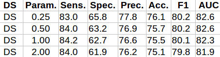
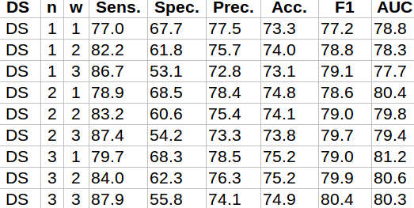
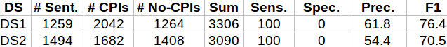
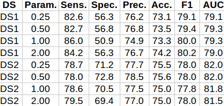
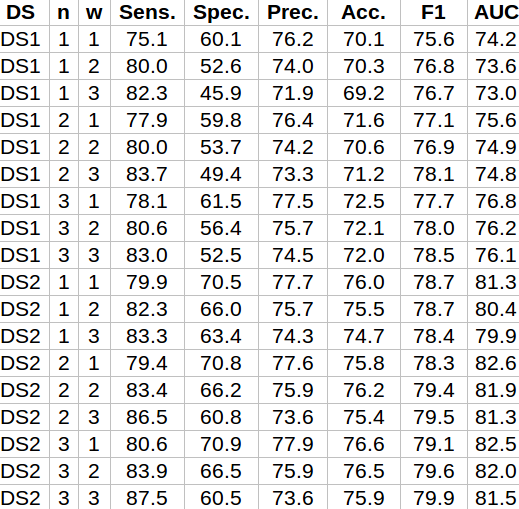

SL kernel results:

APG kernel results:

The following table shows the evaluation of the co-occurrences approach (DS - Data set, Sent. - Sentences, Sens. - Sensitivity, Spec. - Specificity, Prec. - Precision, Acc. - Accuracy, F1 - F1 score, evaluation parameters shown in percent):

The next table shows the results of the APG kernel pipeline for DS1 and DS2:

The last table shows the results of the SL kernel pipeline for DS1 and DS2:

More information about the theoretical background of the kernels, the data sets, and other related information can be found in Kersten Döring’s Dissertation (https://www.freidok.uni-freiburg.de/data/10565).
- The SL kernel results contained in this thesis are not the results presented here, because they were generated with a customised pipeline, independently from the ppi-benchmark package.
- The PubMedPortable project is referred to as PubMed2Go in this thesis.
The script parser.py in the directories scripts/generate_XML_files/DS1/ und scripts/generate_XML_files/DS2 creates the files interactions.txt and no_interactions.txt from the HTML files in the folder data_sets.
- The names of these files refer to the basic status of all sentences inside the text file.
- Relationship_Mining_10000.html and Relationship_Mining_20000.html were concatenated to the file Relationship_Mining.html resulting in DS1. The other two HTML files represent DS2.
The script get_relations.py in the directories scripts/generate_XML_files/DS1/ und scripts/generate_XML_files/DS2 processes the files interaction.txt and no_interaction.txt using the (concatenated) file RM_comments.csv with annotations of false positive compounds (FP-C), false positive proteins (FP-P), non-interacting compounds (NI-C), and non-interacting proteins (NI-P).
- The ouptut of get_relations.py is the file training_dataset.txt.
- This file can be sorted by PubMed IDs with the command “sort -u training_dataset.txt > training_dataset_sorted.csv”, individually done with DS1 and DS2.
The script annotatedsen_to_xml.py generates the files DS1.xml and DS2.xml, building a unified XML format described by Tikk et al.
- This script was developed by Elham Abbasian in her Master Thesis, supervised by Kersten Döring.
The XML files can be checked for consistency. Furthermore, it can be seen how many documents (PubMed IDs) and sentences there are:
java -jar ConsistencyChecker.jar DS1/DS1.xml
INFO: Processing ‘DS1/DS1.xml’…
Processing corpus ‘DS1’ …
Documents seen: 830
Sentences seen: 1259
java -jar ConsistencyChecker.jar DS2/DS2.xml
INFO: Processing ‘DS2/DS2.xml’…
Processing corpus ‘DS1’ …
processed 1000 docs (2155.1724 docs/sec)
Documents seen: 1066
Sentences seen: 1494
java -jar ConsistencyChecker.jar DS1_40/DS1.xml
INFO: Processing ‘DS1_test_case_40_sentences/DS1.xml’…
Processing corpus ‘DS1’ …
Documents seen: 26
Sentences seen: 40
List of packages:
- postgresql (here: version 9.3, used to store evaluation results)
- libxml-perl (here: version 0.08, used for the generation of cross-validation splits)
- python-numpy (here: using Python 2.7, used within the make experiment steps)
- default-jdk (Java 7 or 8, used for the execution of JAR files)
- python-nltk
Set your own user to be a PostgreSLQ superuser after installation of the default package “postgresql”.
Type in the following commands to create a new user “ppi”.
- sudo useradd ppi -s /bin/false
- sudo passwd ppi
sudo su -c “psql” postgres
- CREATE USER ppi WITH PASSWORD ‘ppi’;
- CREATE DATABASE ppi;
- GRANT ALL PRIVILEGES ON DATABASE ppi TO ppi;
- CREATE LANGUAGE plpgsql;
- \q
If you do not want to insert your password everytime to connect to a PostgreSQL database, use these commands (recommended):
- touch ~/.pgpass
- chmod 600 ~/.pgpass
cat >> ~/.pgpass <<EOF
- localhost:*:ppi:ppi:ppi
- EOF
Create the tables which are needed for uploading the results. Change into scripts/ppi-benchmark/Database and execute the following command:
- psql -h localhost -d ppi -U ppi -f init-ppiCV.sql
This section describes how to use run the APG and SL kernel with the combined data set (DS), DS1, and DS2 in different modes:
- CV: 10x-cross-validation
- PR: prediction, based on the trained model of the combined data set (DS)
- XX: cross-corpus training and prediction on user-specific data sets
These are the 3 main commands:
- CV: make experiment Kernel=APG expTyp=CV InputFile=DS.xml Processors=4
- PR: make experiment Kernel=APG expTyp=PR InputFile=DS.xml Processors=4
- XX: make experiment Kernel=APG expTyp=XX TrainFile=train.xml TestFile=test.xml Processors=4
To use this test data set, go to your (new) working directory into “scripts” and run one of the given make commands with a data set from the folder “scripts/generate_XML_files/DS”, e.g.:
- make experiment Kernel=APG expTyp=PR InputFile=annotate_res.xml Processors=4
You can clean your APG workspace after a calculation is finished:
- make clean-APG
Or you can clean the whole workspace:
- make clean-all
These are the 3 main commands:
- CV: make experiment Kernel=SL expTyp=CV InputFile=DS.xml Processors=4
- PR: make experiment Kernel=SL expTyp=PR InputFile=DS.xml Processors=4
- XX: make experiment Kernel=SL expTyp=XX TrainFile=train.xml TestFile=test.xml Processors=4
You can clean your APG workspace after a calculation is finished:
- make clean-SL
Or you can clean the whole workspace:
- make clean-all
Kevin Selm wrote a bugfix for the jSRE software, because it was not possible to use different parameter selections of n and w.
Original software link:
The ppi-benchmark pipeline was changed to make use of the JAR file scripts/ppi-benchmark/Kernels/jsre/source/dist/runTrain.jar, which was exported from a newly created Eclipse project with the source code of the original software and the debugged code of Kevin Selm.
- You can find these files in the folder scripts/jSRE_debug.
If you want to repeat the evaluation procedure, execute the following steps:
- Remove all files in the folder output, except average.py and header.py.
- ./get_csv_results.sh
- Change into the directory output.
- python average.py
- cat DS1*average.csv > DS1_average.csv
- cat DS2*average.csv > DS2_average.csv
- python header.py
- Check the files DS1_average_header.csv and DS2_average_header.csv. They exist as a backup in the folder results/summary/APG/final/ and the selected SQL results are stored as a backup in the folder results/summary/APG/backup_original.
These are the steps to get the originally combined data set evaluation result tables:
APG results:
- ./get_csv_results.sh
- change into directory output
- python average.py
- cat DS3*average.csv > DS3_average.csv
- python header.py
SL results:
- change into directory /CPI-Pipeline/results/summary/DS3/jSRE
- python generate_selects_psql.py
- ./get_csv_results.sh
- change into directory output
- python average.py
- cat DS3*average.csv > DS3_average.csv
- python header.py
The basic input for the script annotatedsen_to_xml.py (training_dataset_sorted.csv) can be created by generating a tab-separated format which contains the following columns:
- PubMed ID
- Sentence with XML tags for all named entities
As many more columns as there are pairs of related entities
- Format of each pair: <entity>__<entity>__<interaction>
This format will automatically generated with the following example command in the folder “scripts/annotate_entities”:
- make annotate InputFile=pmid_example/pmid_example OutputFile=annotate_res.txt Processors=2
You will need to configure python-nltk to download the punkt tokenizer before:
- cd ~
- mkdir nltk_data
- ipython
- import nltk
- nltk.download_shell()
- d
- punkt
- q
In the case of the APG kernel, there are more steps:
- Copy your .model file from “scripts/ppi-benchmark/Experiments/APG/PR/trained/DS/train0” to “scripts/training_model/APG_PR_training/trained_model/DS/train0”.
- Copy “scripts/ppi-benchmark/Experiments/APG/XX/corpus/DS/train0.txt.gz” to “scripts/training_model/APG_PR_training/Corpus_train0.txt.gz”.
- Copy “scripts/ppi-benchmark/Experiments/APG/XX/dictionary/DS/train0.txt.gz” to “scripts/training_model/APG_PR_training/Dict_train0.txt.gz”.
- Copy “scripts/ppi-benchmark/Experiments/APG/XX/linearized/DS/train0.txt.gz” to “scripts/training_model/APG_PR_training/Linearized_train0.txt.gz”.
- Copy “scripts/ppi-benchmark/Experiments/APG/XX/normalized/DS/train0.txt.gz” to “scripts/training_model/APG_PR_training/Norm_train0.txt.gz”.
Please, write an e-mail, if you have questions, feedback, improvements, or new ideas:
If you are interested in related projects, visit our working group’s homepage: